By Joe Duarte, MD · 3rd Edition · 494 pages
Duarte opens by declaring that options belong to every investor, not just Wall Street professionals. Calls gain value when the underlying rises, puts when it falls, and both can be used to limit portfolio risk, protect individual positions, or generate income through spreads and covered writes. Learning options requires what Duarte calls rewiring your brain to see markets in a fundamentally different way — not just direction, but direction combined with time and volatility simultaneously.
The crucial early distinction is between investing and trading. Investing uses time and compounding over long horizons — buy-and-hold stocks, rental property. Trading is shorter-term, targeted, with defined entry and exit points. Options work for both, but their built-in expiration dates make them natural trading instruments. The exception is LEAPS, which stretch out to three years and bridge the gap between the two approaches.
“Options trading is a cautious and very precise exercise.” — Joe Duarte
Before touching a contract, Duarte requires a five-step checklist. Check your financial balance sheet. Set realistic goals that match your experience level. Know your genuine willingness to take risks — not what you think you can handle when markets are calm, but what you can stomach during a drawdown. Become competent in both technical and fundamental analysis. Paper trade before deploying real capital. And the rule he underlines in bold: never trade with money you are not willing to lose.
Two risks unique to options get flagged early. Time value decay means options lose value as expiration approaches — a headwind stocks simply do not have. Leverage cuts both ways, amplifying both gains and percentage losses, even though dollar losses are capped at the premium paid. A $500 option can capture profit potential comparable to a $5,000 stock investment, but if the stock sits flat, the option bleeds value every day while the stock merely waits.
Three primary ways options reduce risk get introduced here. Hedging lets an option gain value opposite to the underlying, keeping total position value high during a decline at lower cost than short selling. Leverage means less capital committed for similar return potential. And income generation through spreads and covered writes creates cash flow in sideways markets. The chapter also distinguishes American-style options (exercisable any time, all stock and ETF options) from European-style (exercise only on the designated date, most index options).
Directional bias gets its first treatment. Long positions need the stock to go up, short positions need it to go down, but certain option combinations can profit whether the underlying rises, falls, or moves sideways. This flexibility is what makes options qualitatively different from stocks. The risk management framework has four components: understand what conditions to analyze, use proper trade mechanics, follow the rules governing options markets, and understand what variables make any position gain or lose value.
ETFs get an early mention because they have become the most important vehicle for options trading outside of individual stocks. SPY and QQQ are the most popular optionable ETFs, trading like stocks during market hours. ETFs on commodity indexes let you participate in commodity markets without futures. Controlling emotions gets its own treatment because Duarte sees it as the biggest threat: the solution is not willpower but structure — a written anticipatory trading plan with rules covering different scenarios.
The plan must include access to proper equipment and technology, realistic knowledge of your time commitment (you cannot day-trade without two to three hours at a stretch), a real-time quote and charting service, a reliable broker for execution, and an educational component keeping you working on both technical and fundamental skills daily. The plan is the firewall between you and the impulsive decisions that empty accounts. Plan your exit before you enter every trade — simple but required.
A financial option is a contractual agreement between two parties. The buyer acquires specific rights while the seller assumes specific obligations. A call owner has the right to buy 100 shares at the strike price by expiration. A put owner has the right to sell. The Options Clearing Corporation (OCC) guarantees that every seller meets their obligation, eliminating counterparty risk entirely. Duarte focuses exclusively on listed options — standardized contracts on regulated exchanges, not the over-the-counter variety.
Four inputs determine an option’s value: the type and strike price, the current stock price, the past trading pattern (volatility) of the underlying, and time remaining until expiration. The option chain displays all available strikes and expirations. Open interest — the number of existing contracts at each strike — tells you liquidity. The symbol format encodes everything: AAPL170505C00148000 means Apple, May 5 2017, Call, $148 strike. The multiplier is almost always 100, so a $2.80 quote means $280 total premium.
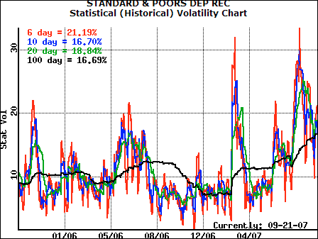
Three expiration cycles exist. Cycle I: January, April, July, October. Cycle II: February, May, August, November. Cycle III: March, June, September, December. Every option has at least the current month and following month available, and LEAPS typically expire only in January and June. A critical warning appears here: options lose time value at an accelerating rate as expiration nears. Never hold an option you plan to sell with 30 days or less remaining.
The four foundational order types: Buy to Open creates a new long position, Sell to Close exits it, Sell to Open creates a short position, Buy to Close exits the short. A covered call means you own the shares when selling, limiting risk. A naked call means you do not, creating unlimited risk. A short put assignment forces you to buy stock at the strike, potentially well above market value.
At expiration, ITM options auto-exercise through exercise by exception — any option ITM by $0.01 or more gets automatically exercised. Your choices are to close before this happens, exercise deliberately, or let OTM options expire worthless. Duarte is emphatic: closing an ITM option is almost always better than auto-exercise because it avoids converting a small option position into a large stock position that may exceed your margin capacity.
A.m. settlement means the last trading day is the day before expiration; p.m. settlement means it is on expiration day. Knowing which applies prevents the surprise of discovering you can no longer trade a position you thought was still active. Options convey no ownership of tangible assets and have a limited life — understanding where they fit relative to stocks, bonds, and ETFs prevents the common beginner mistake of treating them as a substitute for stock ownership.
Two risks define the boundary conditions for every strategy. Limited life means if the move does not happen before expiration, you lose 100% of the premium. Choosing the wrong strategy for the conditions can cause losses that overwhelm your winners. A trader who consistently buys in high-IV environments or sells naked calls without understanding unlimited risk will eventually face a loss large enough to undo months of careful work.
The chapter closes with four tips for getting started: get broker approval first, be disciplined about entry and exit reasons, keep track of expiration dates, and paper trade before committing real money. These four points seem obvious but Duarte returns to them throughout the book because violations of these basics account for the majority of losses among new options traders.
The Greeks — five variables that combine to explain how an option’s value changes — get their formal introduction. Delta measures the expected change per $1 move in the underlying: calls range from 0 to +1, puts from 0 to −1, ATM options sit near ±0.50. Gamma measures how fast delta shifts. Theta quantifies daily time decay. Vega captures the impact of implied volatility changes. Rho measures interest rate sensitivity, the smallest factor. Duarte includes a concrete example: ABC at $20 with ATM calls and puts, showing how delta and gamma shift as the stock moves to $21.
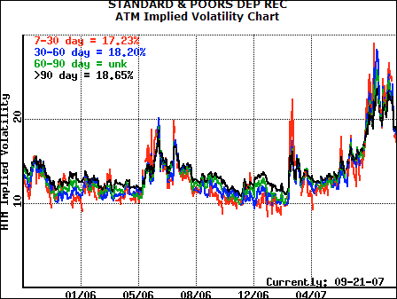
The volatility discussion splits into two concepts. Historical volatility (HV) measures past price movement as annualized standard deviation. Implied volatility (IV) is forward- looking, embedded in the current option price — it includes HV but also captures supply-and-demand dynamics and psychological factors. A major one-day move has a larger psychological impact on IV than its mathematical impact on 100-day HV. The Black-Scholes model, which earned Fisher Black and Myron Scholes a Nobel Prize, provides the framework for comparing theoretical value (using HV) to actual market price (using IV).
Three costs are unique to options. Liquidity cost shows up as wider bid-ask spreads on low-volume contracts — slippage compounds across dozens of trades. Time cost means every day held, time value shrinks via theta. Volatility cost means more volatile underlyings have more expensive options. Concentrate on actively traded contracts: higher volume and open interest mean easier entry, exit, and tighter spreads.
Intrinsic value is what you would get exercising now: stock price minus strike for calls, strike minus stock price for puts, never below zero. Extrinsic value (time value) is everything else — it reflects time remaining and expected movement, eroding to zero at expiration. In-the-money options have intrinsic value. At-the-money have zero. Out-of-the-money have only extrinsic value and expire worthless 100% of the time unless the stock moves before expiration.
Six U.S. exchanges handle options: CBOE, Nasdaq NOM, ISE, NYSE ARCA, PHLX, and BATS, all linked electronically for auto-routing to the best price. Market makers provide liquidity. The OCC guarantees every seller meets obligations. The OIC (Options Industry Council) provides free education. Pricing rules: options trade in increments of $0.01, $0.05, or $0.10. Premium equals quoted price times 100.
Three risks dominate. Expiration risk: ITM options auto-exercise, converting a small position into a large stock holding — exit 30 days before expiration. Leverage risk: a small stock move creates a large percentage move in the option. Time value risk: a headwind for buyers, a tailwind for sellers. The CBOE offers option calculators at cboe.com to compute all five Greeks from basic inputs — Duarte uses them throughout the book.
The option pricing model compares theoretical value (using HV) to actual market price (using IV). You can use it in two directions: enter HV to get theoretical value, or enter the market price to solve for IV. “Expensive” is not always bad and “cheap” is not always good — you need the context of where IV sits relative to its own history. Rho gets the least coverage but matters in rapidly changing rate environments, particularly for longer-dated options like LEAPS.
The chapter establishes that options are derivatives with their own rules that do not map neatly onto stock trading experience. The sooner you internalize the mechanics of contract creation, assignment, exercise, and settlement, the fewer expensive surprises you will encounter. The institutional plumbing — exchanges, market makers, OCC guarantee, standardized terms — creates a remarkably well-structured market for anyone willing to learn the rules.
Before trading, know two things: the maximum amount of loss possible and the probability of sustaining that loss. Professional traders spend significant time mapping out potential risks before worrying about reward. Long stock on margin doubles risk and adds interest. Short stock carries unlimited risk because the stock can rise indefinitely and is not allowed in retirement accounts. Options buying caps risk at the premium paid, while options selling can incur losses greater than the initial investment.
The breakeven formulas are foundational. Call breakeven equals strike plus premium paid. Put breakeven equals strike minus premium paid. The risk graphs visualize these relationships. A long stock position shows a straight diagonal line. A long call shows a flat loss floor at the negative premium, then rises above zero once the stock exceeds breakeven. A long put is the mirror image on the downside.
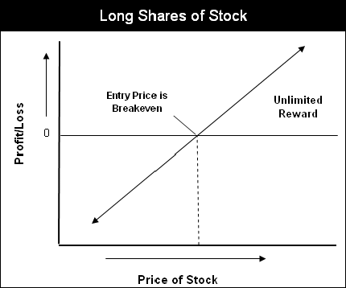
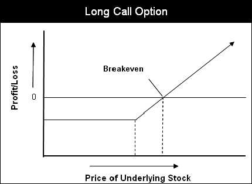
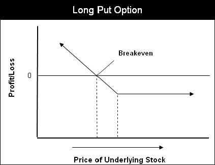
The leverage comparison makes it concrete. Stock ABC at $43 on 50% margin requires $2,150. The $40 call costs $400. Stock rises to $47: the stock gains 18.6% while the call gains 75%. But if the stock drops to $30, the stock on margin loses 60% with potential margin calls, while the call loses 100% of its much smaller outlay. The real power is not the amplified upside but the limited loss nature: your worst case is defined before entry.
Three basic combination positions use stock plus options. The married put (long stock plus long put) creates a floor on losses while preserving unlimited upside — the risk graph looks remarkably similar to a long call. The covered call (long stock plus short call) generates income but caps upside at the short strike. The collar (long stock plus long put plus short call) limits both sides.
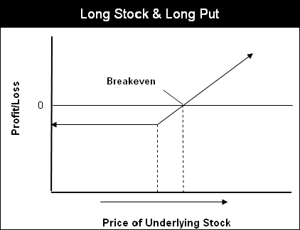
“Rule #1: don’t lose money. Rule #2: remember rule #1.” — Warren Buffett, quoted by Duarte
Worst-case scenario thinking is not pessimism but the foundation of Duarte’s approach. Before analyzing potential gains, examine the downside first. Option-only combinations are driven by market conditions: high IV versus low IV, sideways versus directional. You build these by overlaying individual risk graphs to see the combined profile. Strategy selection is profile selection, and the chapters that follow are a catalog of available profiles matched to specific market conditions.
The moneyness framework — ITM, ATM, OTM — is not just vocabulary but a sorting mechanism. ITM options have the highest delta and respond most closely to the underlying but cost the most. ATM options sit at the sweet spot of delta near 0.50 and maximum time value, the default for directional trades. OTM options are cheapest but have the lowest probability of finishing in the money. Every strategy in the book specifies which moneyness to use and why, because the choice fundamentally shapes the risk/reward profile.
Gap-down risk deserves mention because it catches new traders off guard. A stock may open significantly below the previous close, well below a pre-decided exit level, creating larger losses than planned. This is true for stocks and options alike, but option positions with defined risk (long calls, long puts, spreads) have a natural cap on the damage. Naked short positions and stock-on-margin positions have no such protection, which is why Duarte keeps returning to limited-risk structures.
Before picking a strategy, read the market’s mood. Falling interest rates are generally bullish; rising rates eventually negative. The Fed remains the most influential central bank, but the PBOC and ECB now matter too. The real diagnostic tool is market breadth — the heartbeat of the market. Breadth tracks advancing versus declining stocks to gauge the health of any move. A bearish divergence occurs when the market advances but declining stocks outnumber advancers, a serious warning signal.
The Advance-Decline Line subtracts declining issues from advancing issues as a cumulative daily total. Visual inspection matters more than specific values — watch whether the line trends up, down, or sideways relative to the index. The historical record is emphatic: every significant decline since 1987 has been preceded by a negative divergence in the NYSE A-D Line. Three indicators refine the signal: a 20-day SMA for smoothing, RSI for extremes, and ROC for momentum warnings.
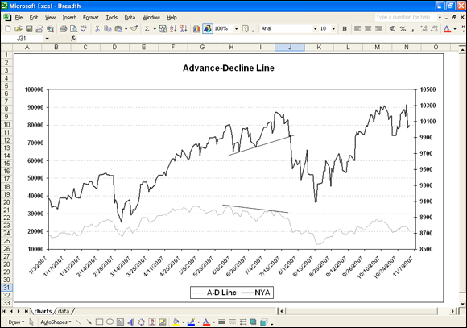
Put-to-call ratios, created by Martin Zweig (who predicted the 1987 crash on national television the Friday before Black Monday), are contrarian indicators. Extremely low readings signal complacency and are bearish. Extremely high readings signal excessive fear and are bullish. The CBOE Equity P:C ratio above 0.90 suggests oversold conditions. The CBOE Index-Only ratio above 2.4 signals near-term tops. The ISE Sentiment Index (ISEE), which tracks only customer buys, signals extreme bearishness below 85.
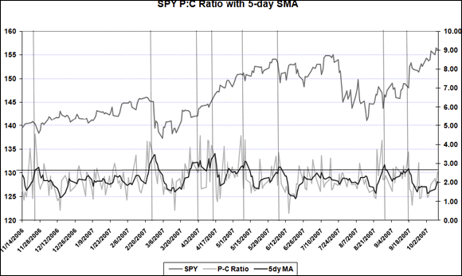
The Put Volume Indicator (PVI), created by John Bollinger, divides daily put volume by its 10-day SMA. High readings signal bears gaining the upper hand, but Duarte warns these often precede acceleration of selling before a reversal — not immediately contrarian. Only when PVI reaches historically extreme levels and begins to reverse does the buy signal emerge.
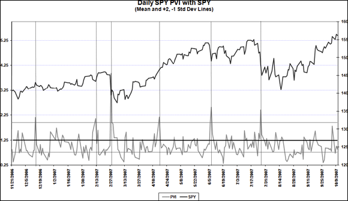
The VIX — blended IV from S&P 500 options — is negatively correlated with SPX. A climbing VIX means bearish conditions; a declining VIX means neutral to bullish. But when fear gets extreme, VIX spikes to unsustainable levels, exhaustion sets in, and the reversal begins. Watch for VIX reversals to confirm market bottoms. Fear is a stronger emotion than greed, which is why markets fall faster than they rise.
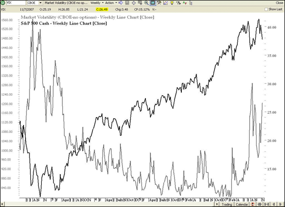
The strategy implications are direct. Buy options when IV is relatively low; sell when relatively high. When IV is low and increases quickly, it adds value to both calls and puts. When high and decreasing, it destroys value. Use two to three complementary sentiment tools — not five or six of the same type, which causes indicator burnout. Calculate mean plus standard deviations to identify extreme readings. Exception: the CBOE index-only P:C ratio is not contrarian — sophisticated index traders who buy puts tend to be right.
The A-D Ratio (advances divided by declines) oscillates around 1.0. Extreme lows provide timely bottom signals, while extreme highs confirm reversals after the fact rather than predict them. Duarte emphasizes qualitative judgment: do not include all historical data in your standard deviation calculations because market structure changes over time. Levels that were extreme in 2005 may be perfectly normal in 2015. The tools must evolve with the market they measure.
Three chart types matter. Line charts plot only closing prices — great for the big picture but no gap or intraday information. OHLC bar charts show open, high, low, close with visual cues: long bars mean volatility, closes near the high show strength. Candlestick charts are the most used by professionals, with patterns describing the bull/bear battle. Best practice: use line charts for major trends, candlesticks for price action detail. Multiple timeframes add context: monthly for long- term, weekly for intermediate, daily for short-term.
Support and resistance are the backbone of technical analysis for options traders. Two touches establish a level, a third confirms it. Previous support often becomes resistance after a breakdown, and vice versa. Uptrends connect higher lows, downtrends connect lower highs. A critical rule that experienced traders internalize: stop losses for a loss are written in stone and cannot be revised to extend losses, ever. Profit targets are flexible.
Moving averages provide the trend hierarchy. The 20-day EMA tracks short-term trends, 50-day intermediate, 200-day long-term. A break of the 200-day is always significant and may confirm a trend reversal. Relative ratio lines (one security divided by another) become powerful tools for sector rotation: a rising ratio means the primary security is outperforming. The ten Select Sector SPDR ETFs cover the entire S&P 500 and provide the universe for rotation analysis.
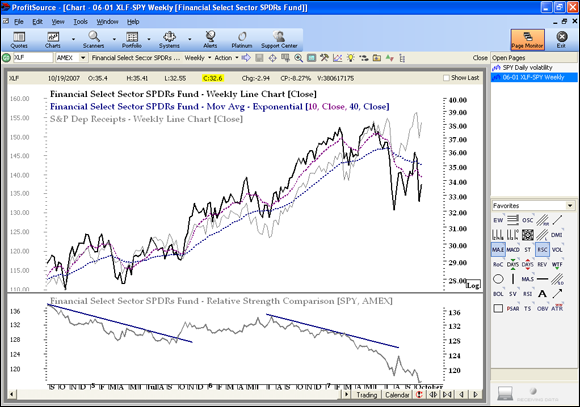
Rate of Change (ROC) provides an objective ranking tool. Today’s price divided by the price N trading days ago, times 100. ROC above its SMA is a bullish alert; below is bearish. But ROC alone is not enough — combine it with chart trend analysis, because price is the ultimate indicator and ROC only confirms direction. Negative ROC does not necessarily mean a downtrend; it can simply mean underperformance relative to the group.
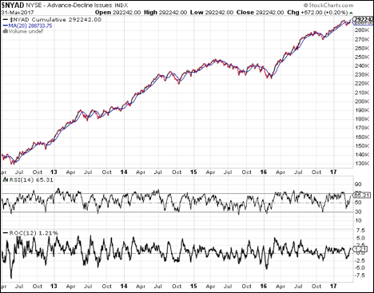
Average True Range (ATR), developed by Welles Wilder, captures price gaps that simple high-minus-low calculations miss. It is lagging but can lead statistical volatility at inflection points — during Brexit in 2016, ATR bottomed weeks before the mini-crash while HV peaked two weeks after. Bollinger Bands (20-period SMA plus/minus 2 standard deviations) contract in low volatility and expand in high. When bandwidth reaches a 6-month low, the stock is a squeeze candidate.
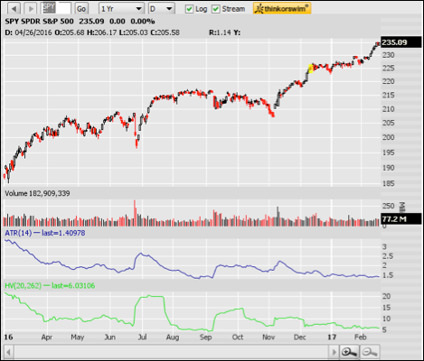
Fibonacci ratios (0.382, 0.500, 0.618, 1.618) identify potential support during pullbacks and price targets beyond prior swings. Because many traders watch these levels, they become self-fulfilling. Regression channels use a line of best fit with boundaries for objective exit rules. The crosshairs tool projects future price and date combinations for option expiration planning — uniquely useful for options traders matching price targets to specific dates.
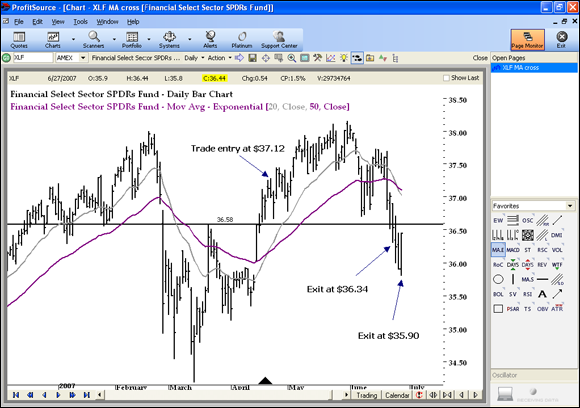
“If you lose a little money 60% of the time but you are able to make good money the rest of the time, you are more likely to come out ahead. The big problems in trading are the ones caused by frequent heavy losses.” — Duarte
The probability alignment framework uses an XLI covered call as the case study. Ten indicators scored as bullish, bearish, or neutral. Mixed signals are normal — waiting for perfection results in no activity, and perfect signals often arrive at the end of a move. Volume confirmation adds a final filter: increasing volume as price approaches a trendline downward is a bearish alert, and a trendline break on increasing volume is an exit signal.
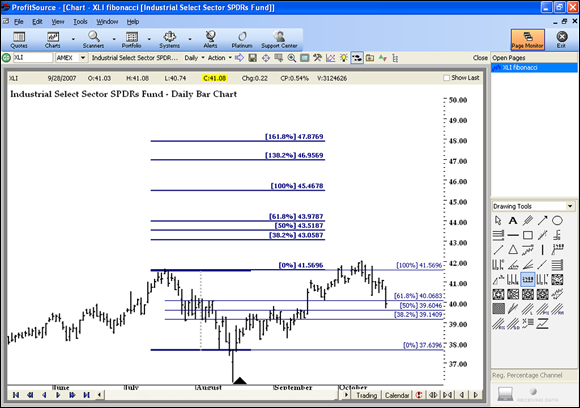
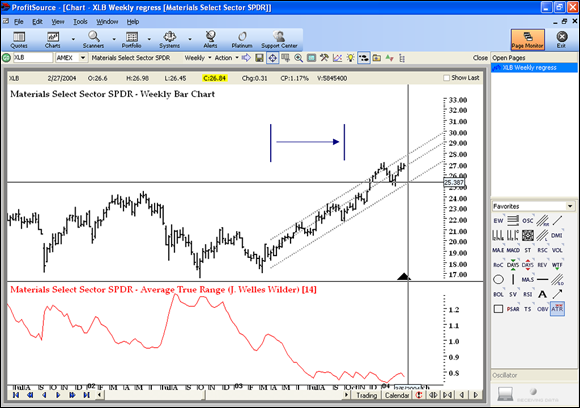
The strategy-to-conditions matching table becomes a permanent reference. Bullish low volatility: long calls, married puts, call debit spreads. Bullish high volatility: covered calls, credit spreads. Bearish low volatility: long puts, put debit spreads. Bearish high volatility: call credit spreads. Range-bound high volatility: butterflies, condors. Range-bound low volatility: calendar spreads, diagonal spreads. The biggest determinant is your financial goal: income, capital gains, or hedging.
Recognizing proper option pricing takes longer than learning strategies. Duarte’s solution is daily tracking: build a spreadsheet recording the underlying price, ITM/ATM/OTM call and put prices for multiple expirations, and delta, gamma, and theta for each. After a few weeks you develop intuitive feel for how much an option should move given a particular stock move — a skill that no formula memorization can replace.
The IV rules of thumb are practical. High IV correctly predicts large future moves most of the time. Low IV correctly predicts small moves. The sweet spot for entries is low IV combined with a technical setup — cheap options with a catalyst. Extended high IV marks excellent exit points. IV at 30% on a $100 stock means the market expects it to trade between $70 and $130 over the next year based on one standard deviation (68.2% of outcomes).
IV crush happens when IV drops sharply after an anticipated event resolves. This can destroy option values even if the stock moves in the right direction. Selling high-IV options hoping for a crush is not a free lunch — the stock itself may move dramatically, overpowering the IV benefit. The short option sweet spot is 30 to 45 days to expiration, combining accelerating time decay with meaningful remaining premium. Time decay is not linear — it drops like a waterfall near expiration.
Paper trading provides P&L feedback, forces you to address situations before risking money, and identifies issues you had not considered. But it cannot replicate the emotional response to real losses, assignment risk, or margin requirements. Duarte views paper trading as laying mental grooves — necessary preparation, not complete training. Use real current quotes and record every trade as if money were on the line.
Trading systems use specific, rigidly defined entry and exit rules with no discretion. When a buy signal fires, you enter. When an exit signal fires, you close. Adding discretion destroys the two best things: minimizing emotions and enabling backtesting. The nine-step backtesting process walks from strategy identification through filter addition through risk management, always testing across bull, bear, and sideways periods.
The ROC momentum system example (long-only, enter when ROC(34) crosses above SMA(13), exit when ROC(21) crosses below SMA(8)) shows 4.7% average return with a 1.96 gain-to-loss ratio in backtest. Adding a 15% stop reduced max loss from 35% to 16% with only minor profitability reduction. Forward tests showed expected degradation to 1.6% average return — conditions change and inefficiencies close.
Three rules for profit management, in non-negotiable order: cut losses, prevent profits from turning into losses, let profits run. When holding multiple contracts, take profits on a portion at 20% gain and let the remainder ride. Strategy mastery does not mean every trade is profitable — it means the appropriate conditions were in place. Mastery can take years to evolve, and the best trades often take the longest to find.
IV varies by strike price and by expiration. ATM IV is usually the lowest. Skew charts (covered in Chapter 15) show IV across strikes, revealing opportunities to sell overpriced options and buy underpriced ones as part of a spread. The deeper ITM an option is, the less IV matters to total price because intrinsic value dominates. These nuances separate informed traders from those who treat all options at the same strike and expiration as interchangeable.
Duarte frames trading as a business. Losses are operating expenses — minimize but do not try to eliminate. The best traders look for the right setup rather than trading as often as possible. Longevity — patience, staying power, showing up every day — depends on limited-loss strategies and proper position sizing. Two methods: maximum dollar amount per trade or maximum percentage of account, with percentage preferred because it scales with account size.
The plan itself must be written down. Set realistic goals with quantifiable measures of success (a small account should target covering a monthly dinner, not replacing a salary). Keep excellent records of every trade and result. Expect the plan to evolve. Include separate sections for investments versus trades because the time horizons, risk tolerances, and analytical frameworks differ. Education costs decline over time but the learning curve is the largest early expense.
Order types get practical treatment. Limit orders are best for entries because they guarantee price. Market orders are the only type guaranteeing execution, making them right for exits when you must get out. Stop orders on options have a problem: low volume means the quote frequently triggers the stop rather than an actual trade. OCO (One Cancels Other) orders let you place stop-loss and profit-limit simultaneously — without OCO, both can execute on a strong swing.
Rolling options is essential. Roll out (same strike, later expiration) buys time. Roll up (higher strike) avoids assignment or captures high IV. Roll down (lower strike) does the same on the downside. These can be combined. Combination orders enter spreads as a single order for better pricing. The tip: reduce the debit slightly or increase the credit versus the market quote, because exchange traders like hedged positions and often fill slightly favorable spread orders.
Contingent orders trigger based on the underlying stock price rather than the option price. The advantage: you can use technical stock-level exit points for option positions. The disadvantage: less certainty about where the option will trade when triggered. Use an option calculator to estimate the option price at the stock trigger level. The distinction between stop orders (active on the exchange, visible) and contingent orders (active on the broker’s system, invisible to the market) matters for execution quality.
Managing costs is non-trivial. Commission plus slippage must be calculated at different contract sizes and price points. Margin costs apply to short positions, with covered versus naked the primary consideration. Taxes add complexity: retirement accounts defer taxes but limit available strategies. Establishing options on existing positions may trigger taxable events. Cumulative costs must be lower than what you earn over time, or the business is not viable.
Start with single-contract sizes for every new strategy and scale up only as you prove competence. Because options are leveraged, allocating the same dollar amount as a stock position dramatically amplifies effective exposure. The written plan should cover risk management rules, general IV guidelines, steps for each rule, and expected plan-review schedule. A plan that evolves is not failing — it is calibrating. But the core risk rules should never be softened.
Duarte emphasizes that the best time to build discipline is during paper trading, not after real money is at risk. The shift from paper to live should happen with the smallest possible position sizes, on limited-risk strategies, with the written plan in hand. Confidence from following tested rules is what keeps you disciplined when the picture gets hazy — and in trading, the picture is always hazy.
An index is a pool of financial instruments grouped into a single value. You cannot own an index directly, so index options are cash-settled: ITM at expiration pays the difference between settlement value and strike, multiplied by 100, as cash. The SPX is most widely used by professionals, with SPY as its companion ETF (share-settled). DJIA tracks 30 blue chips via DIA, Nasdaq-100 via QQQ, and Russell 2000 covers small-caps with bigger moves in both directions.
Index construction matters. The DJIA is price-weighted — a $300 stock moves it more than a $40 stock regardless of market cap. The S&P 500 is market-cap-weighted . Equal-dollar-weighted indexes give every stock the same impact but require quarterly rebalancing. Cash settlement example: SPX closes at 1,523, you own the June 1,520 call. Settlement uses the opening price of each component stock (SET ticker). Cash credit: (1,523 − 1,520) × 100 = $300.
American-style options (all stock and ETF options, plus OEX and SOX) can be exercised any time. European-style (most index options including SPX) can only be exercised on the designated date, and the last trading day is usually one day prior — many index options stop trading on Thursday. SPX options with third-Friday expiration use opening prices (AM settlement); other expirations use closing values (PM settlement). Always check the product specification sheet before trading any index option for the first time.
Early exercise is rarely desirable because it forfeits remaining time value. If more than $0.20 of time value remains, selling the option and separately acting on the stock is more profitable. The ex-dividend date creates assignment risk for short calls: when the dividend exceeds remaining time value, early exercise becomes rational. Auto-exercise activates for any option ITM by $0.01 or more at expiration, potentially creating unexpected positions.
When assigned on a short put, you buy shares at the strike — likely above market price. When assigned on a short call without shares, you create a short stock position. Deep ITM options have near- zero time value, which means assignment risk rises sharply. Expiration management rules: long OTM options should be sold if any value exceeds commission. Short OTM options require monitoring because unexpected exercise is possible near the strike. Short ITM options should be assumed to result in assignment.
European-style settlement has a specific danger for SPX short OTM puts: bad news after Thursday close can cause a strong morning drop when the SET value is determined, turning what was an OTM put into an ITM assignment overnight. This weekend gap risk is unique to AM-settlement index options and catches sellers who assumed their position was safe.
Settlement tickers for the major indexes: SPX uses SET, RUT uses RLS, NDX uses NDS. These are published by the exchanges and represent the actual settlement values used to determine cash credits and debits. Duarte’s warning is blunt: index option specs vary widely, and never assume the same specifications as SPX. Some American-style index options (OEX, XAU, SOX) are also cash-settled, which combines exercise flexibility with cash delivery.
The distinction between stocks and indexes for options trading comes down to deliverables. Stock options deliver shares. ETF options deliver shares. Index options deliver cash. This affects everything: combination strategies require owning the underlying (possible with stocks and ETFs, not with indexes), exercise creates different positions, and margin requirements differ. Understanding these differences before entering a position prevents the surprise of discovering you have a different position than you expected.
The protective put (or married put) locks in a minimum sell price without requiring exercise — gains in the put offset stock losses. One long put per 100 shares. Two key decisions: term of protection (expiration month) and level of protection (strike price). For temporary 30-to-60-day protection, use options with 60-to-90 days to expiration to avoid the steepest theta decay.
The cost-per-day comparison reveals a counterintuitive truth. The October put at $1.05 costs $1.75 per day of protection. The January put at $2.15 costs $1.43 per day. Paying more upfront for the longer-dated option actually buys cheaper daily protection. Theta acceleration in the last 30 days is the put buyer’s enemy: the XYZ theta table shows decay nearly doubling from 60 to 30 days, then doubling again from 30 to 10 days.
“Buy homeowner’s insurance before the house burns down. Don’t buy put protection after the correction — you’ll overpay dramatically.” — Duarte
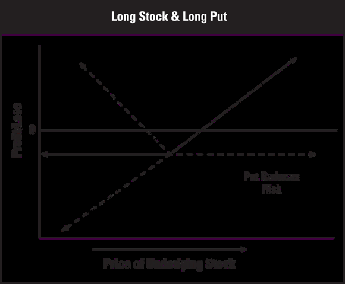
For bearish bets, buying puts beats shorting stock. A long put at $105 has $105 max risk and $3,645 max reward. Short stock at $3,750 has unlimited risk and $3,750 max reward. Similar reward potential at dramatically lower risk, without the complexities of short selling — no borrow requirements, no margin calls, no forced buy-ins.
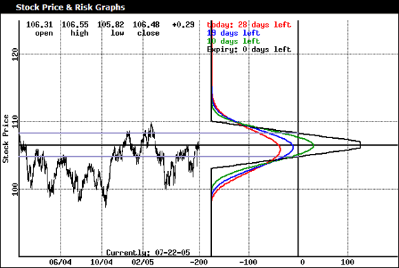
Index hedging scales protection to an entire portfolio. ATM puts have delta near −0.50, so two ATM puts per 100 shares creates a near-perfect hedge. As the put moves deeper ITM, delta approaches −1.0 and protection automatically increases as the decline accelerates — exactly when you need it most. The OEX hedge example shows $225,000 portfolio protected at 92.44% coverage using two March 1040 puts.
Adjusted options are modified when corporate actions occur — splits, special dividends, mergers, spinoffs. A 2:1 split doubles contracts and halves strikes. Merger deliverables might include shares of the acquiring company plus cash. Duarte’s rule: never create new positions using adjusted options you do not fully understand. Apparent pricing anomalies in adjusted options are almost always misread deliverables, not free money.
The delta approach to hedging provides precision. 100 shares equals +100 delta. A near-perfect hedge brings position delta close to zero. Using four Jan 35 puts with delta −29.1 each: 4 × −29.1 = −116.4, combined with +116 shares equals −0.4 delta, nearly perfect. But options are variable-delta securities — delta changes by gamma for every $1 move, so the hedge must be monitored and may need adjustment as the stock moves.
The cost comparison between protective strategies drives the choice. Short-term puts provide temporary insurance at higher daily cost. Longer-term puts spread the cost over more days. LEAPS puts offer the cheapest daily protection but tie up more capital upfront. Collars offset the put cost with call income but cap upside. The right choice depends on how long you need protection, how much upside you are willing to sacrifice, and your outlook for the underlying.
Options reduce risk by reducing capital at stake. A long call caps loss at the premium while long stock can lose its full value. The tradeoff: higher breakeven, slower profit accrual, and a time constraint. Three factors determine directional success: correctly predicting direction, magnitude, and timing. A stock sitting flat is merely annoying for investors but deadly for option holders because theta punishes every day.
LEAPS provide 9 months to 3 years of time, almost always expiring in January. More expensive than short-term options but dramatically more time for the underlying to cooperate. They do not receive dividends, so factor the missed income into cost comparisons. A LEAPS call replaces long stock at a fraction of the capital but with a defined expiration date that stocks do not have.
Vertical spreads are the workhorse. A long and short option of the same type and expiration but different strikes, created for either a debit or credit. All four flavors have limited risk and limited reward. The bull call spread: buy lower strike call, sell higher strike call. ABC at $37.65, buy $35 call at $4.20, sell $40 call at $1.50. Debit = max risk = $270. Max reward = $230. Breakeven = $37.70.
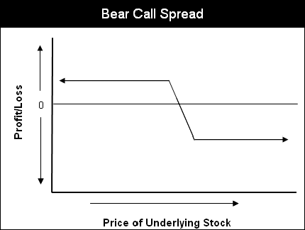
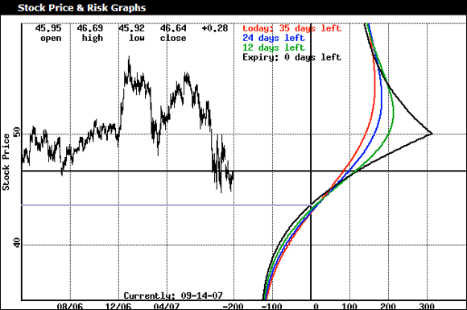
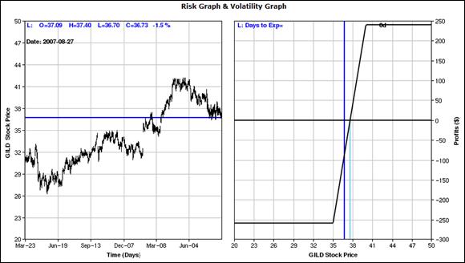
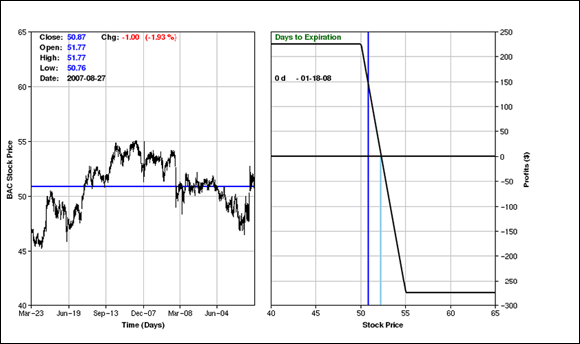
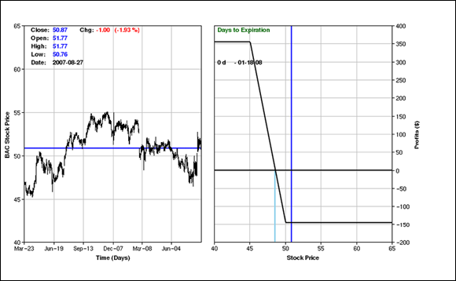
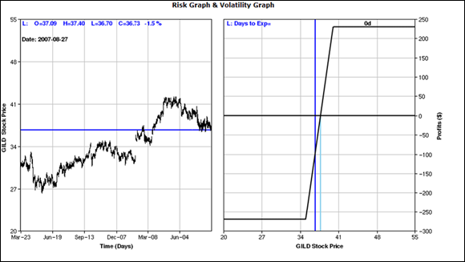
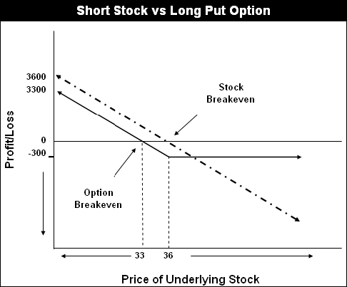
The bear put spread: buy higher strike put, sell lower strike put. XYZ at $50.85, $145 debit, $355 max reward, $48.55 breakeven. The credit side mirrors: bear call spread (sell lower call, buy higher call) and bull put spread (sell higher put, buy lower put). Credit = max reward. Risk = strike width times 100 minus credit.
Universal spread rules: always exit both legs together — never just the long leg, which creates a naked short. Enter debit spreads with at least 60 days to expiration. Close credit spreads on the last trading day if the underlying is near the short strike. Use limit orders; spread orders appeal to floor traders who are naturally hedged and often fill at slightly better prices than quoted.
The debit and credit spread formula tables should become automatic before placing a first spread. For debit spreads: risk = debit, reward = (strike width × 100) − debit, breakeven = long strike plus/minus net premium. For credit spreads: risk = (strike width × 100) − credit, reward = credit, breakeven = short strike plus/minus net premium. The symmetry between the four flavors makes them intuitive once you see the pattern.
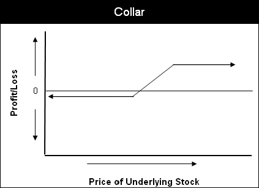
Covered versus naked positions are the fundamental risk distinction. A covered position has its short obligation satisfied by stock or a long option of the same type. A naked call has unlimited risk and limited reward — the riskiest position you can create. Months of small credits can be wiped out by one trade. A naked put has limited-but-high risk. Duarte excludes all naked strategies from his recommended list.
Entering debit spreads when IV is relatively low gives a double benefit: cheaper entry and the possibility that IV expansion increases the spread’s value before the underlying even moves. Credit spreads benefit from high IV at entry because elevated premium provides a larger credit and wider margin of safety. This IV awareness transforms mechanical spread construction into strategic positioning.
Covered calls are the most popular strategy among individual investors. Own stock, sell a call, receive the credit, accept a cap on upside at the short strike. Best established 30 to 45 days out when IV is relatively high, in a sideways market. The strike should be above purchase price. Never sell a covered call on a stock you must hold, and never sell the stock without first buying back the call. Max risk = stock value minus premium. Max reward = (strike minus stock price) times 100 plus credit.
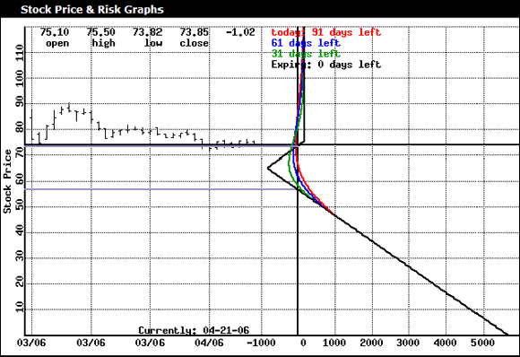
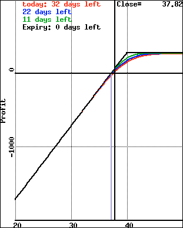
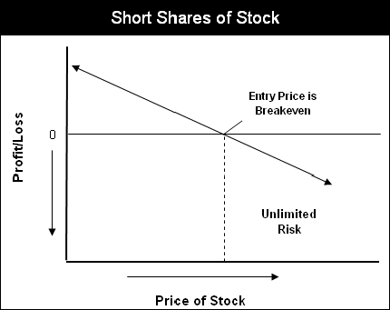
The collar adds genuine downside protection: long stock, long put, short call. Limited risk, limited reward. The short call premium offsets part or all of the put cost. Best use: protecting gains late in the calendar year without triggering a taxable sale. The example (ABC at $37.86, buy 37.50 put at $1.20, sell 40 call at $0.70) shows $50 net debit, $86 max risk, $164 max reward, $38.36 breakeven.
Calendar spreads use same type and strike but different expiration months, always for a net debit. The near-month short option decays faster than the long, creating profit if the stock stays near the strike. The risk profile is a tent shape — maximum profit at the strike, losses on both tails. Three scenarios at near-month expiration determine your move: stock up sharply (bull call spread with remaining long), down sharply (evaluate exit), or near strike (sell another near-term call).
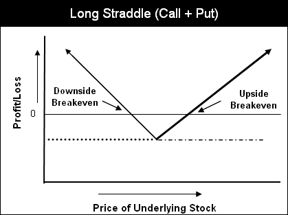
Diagonal spreads combine different strikes and expirations — a vertical plus calendar hybrid. More upside potential than a straight calendar because the long option has a lower strike. The critical danger with both: if the long option expires or is exited while the short remains, you hold a naked position. Never let the long leg expire without closing the short leg first.
Volatility skews reveal pricing anomalies. A price skew means same-month options have significantly different IVs across strikes. A time skew means different months have different IVs. The trading edge: sell the option with atypically high IV, buy the one with normal or low IV. Calendar spreads capitalize on time skews. Ratio backspreads capitalize on price skews.
The covered call formulas quantify what is at stake. For ABC at $37.72, selling the 40 call at $0.50: max risk $3,722, max reward $278, breakeven $37.22. The reward looks small, but compounded monthly in a sideways market, covered call income can add 6% to 12% annualized. The key operational rule: never place a standing stop-loss on the stock while a short call is open — if the stop triggers, the stock sells and you hold a naked short call.
Collar formulas: net debit = (put price minus call price) times 100. Max risk = (stock price minus put strike) times 100 plus net debit. Max reward = (call strike minus stock price) times 100 minus net debit. Breakeven = stock price plus net debit per share. The risk graph shows a flat bottom (put protection), rising middle, and flat top (call cap). Once you sell the call in a collar, you are obligated to sell if assigned — do not collar positions you are unwilling to part with.
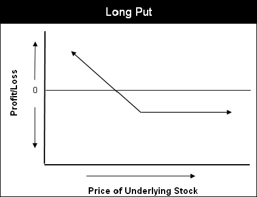
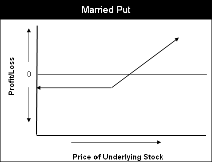
A warning about calendar and diagonal spreads deserves emphasis: a spread with the short option in the later month and long in the earlier month is equivalent to holding a naked position. This inverted calendar is not consistent with good risk management because when the near-term long expires, the far-term short remains uncovered. Always ensure the long option expires after the short.
ETFs are where the practical power of options comes alive. Unlike indexes, you can own an ETF, enabling combination strategies: protective puts, covered calls, collars. ETF volatility is inherently lower than component stocks because of diversification. Three key differences from index options: ETF options deliver shares (not cash), are always American-style (no exercise-date surprises), and the underlying is something you own and can take delivery of.
Five IV principles serve as a permanent decision framework: technical analysis is core to options trading, the underlying price sets the tone, let the underlying guide your strategy, buy options when IV is low, sell when IV is high. The trading rule distilled: when IV exceeds HV, options are expensive and favor selling strategies. When IV is at or below HV, options are cheap and buying strategies have the edge.
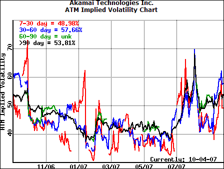
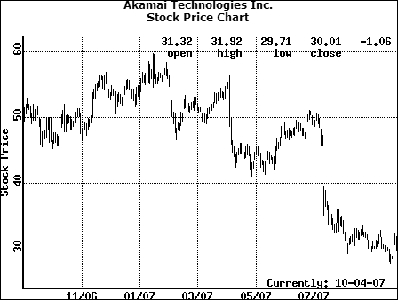
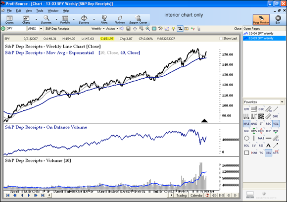
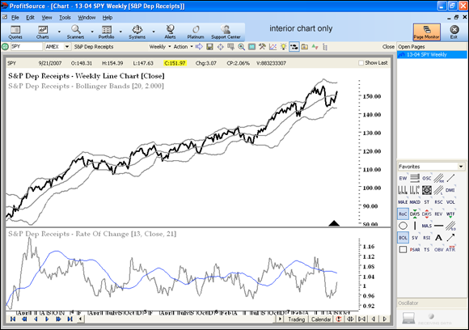
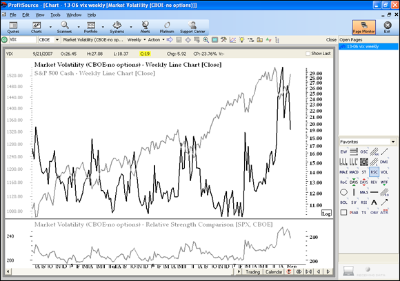
The SPY protective put case study demonstrates the principles. SPY at $151.97 with 150 shares, four Dec 150 puts at $4.30 each for $1,720 total. The 150 strike chosen for tightest bid-ask (88,278 open interest). Combined delta of −156 versus +150 shares gives a slight downside bias. Historical outcome: the market topped October/November 2007, and the puts provided excellent protection through the initial leg of what became the worst financial crisis since the Depression.
The sector rotation system uses the ten Select Sector SPDR ETFs ranked weekly by 3-month return. Invest in the top-ranked, maintain until it drops below rank 3 for two consecutive weeks, then switch. The 50/200-day SMA crossover on SPY determines whether to run the system (bullish) or retreat to core plus puts (bearish). Backtest results from 2000 through 2007: tilt strategy produced $14,080 from $5,000 versus $7,599 buy-and-hold.
Leveraged ETFs (2X, 3X) using derivatives and swaps carry a fundamentally different risk profile with low option liquidity. Duarte warns against combining options with leveraged ETFs — layering leverage on leverage can produce catastrophic losses in a single session. Standard ETFs are the appropriate vehicles. Always check that an ETF trades at least one million shares daily before using its options.
The HV versus IV comparison on charts provides immediate context. The 2-year SPY IV chart shows spikes corresponding to market events, while the HV chart shows shorter periods are more jagged. When current IV exceeds the historical range, options are expensive. When below, they may be cheap. These charts should be consulted before every trade, not as an afterthought but as a primary decision input.
ETF option strategies are identical to stock option strategies but benefit from lower volatility, higher liquidity, and the diversification effect. A protective put on SPY hedges the entire large-cap universe. A covered call on XLK generates income from the entire technology sector. A collar on XLF locks in financial sector gains before year-end. The combination of lower per-contract cost and broader coverage makes ETF options the most practical vehicle for portfolio-level strategies.
Straddles and strangles profit from volatility, not direction. Both combine a long call and long put. A straddle uses the same strike (more expensive, tighter breakevens). A strangle uses two OTM strikes (cheaper, larger move required). Three ideal setups: sideways consolidation before a breakout, before earnings, and before economic reports. Buy when IV is relatively low, exit 30-plus days before expiration because two long options mean double the theta exposure.
The Goldman Sachs straddle is one of the book’s best case studies. GS at $178, two Oct 180 calls plus two Oct 180 puts for $4,020 max risk. Downside breakeven $159.90, upside $200.10. GS hit $200.50 on the Fed meeting day — one call sold at $22.80, rest closed on earnings day for $1,410 total profit. The strangle on the same stock (OTM strikes) produced $1,710 — higher profit because the OTM structure amplified the per-contract gain.
Delta-neutral trading brings position delta near zero, removing directional bias. The McKesson example is dramatic: 100 shares at $180, hedged with three Nov 160 puts when the stock was at $166. Earnings miss sent MCK from $159.89 to $129.80 at the open. Without the hedge: −27.9% ($5,020 loss). With the delta-neutral puts: +22.1% ($4,229 gain). The hedge converted a near-28% loss into a 22% gain.
The GS position delta table shows evolution from +5.0 at entry (nearly neutral) to +159.6 by day 24. Near the 30-day mark, take profits rather than adjust. Adjustment methods: buy more calls (+delta), puts (−delta), or stock. But adjusting is not the same as avoiding losses — if the position is not working, exit rather than throwing more capital at a broken thesis.
Gamma is greatest for ATM options and increases as expiration approaches. IV increases push all deltas toward 0.50; time decreases push OTM deltas toward zero and ITM deltas toward 1.00. Understanding these dynamics matters because a straddle that starts delta-neutral will drift as the stock moves, and knowing how fast it drifts (gamma) determines when adjustment is needed versus when the drift is actually generating profit.
Straddle timing is everything. Buy when IV is at the lower end of its historical range. The Cisco example showed eight predictable IV spikes over two years, all corresponding to quarterly earnings. These seasonal patterns create repeating opportunities. If you purchase even numbers of contracts, take partial profits on the winning leg while leaving the rest for additional gains — a technique Duarte demonstrates in the GS study with excellent results.
The strangle risk profile is a flat loss region (the U bottom) between the two OTM strikes, unlike the straddle’s V-shaped point of maximum loss at the single strike. A strangle requires a bigger move but costs less to enter. Short strangles are extremely dangerous — combining limited-but-high risk (short put) with unlimited risk (short call). Duarte warns against them explicitly and includes them only so readers understand the risk profile they are avoiding.
Delta-neutral trading is not the holy grail. You still must evaluate potential risks and rewards, identify reasonable position sizes and exits, and accept that adjustments cost money. The McKesson trade worked spectacularly, but a stock that moves slowly in one direction while theta decays both legs is the worst scenario for any direction-neutral strategy. The edge comes from event-driven catalysts where the magnitude of the move overwhelms the time decay.
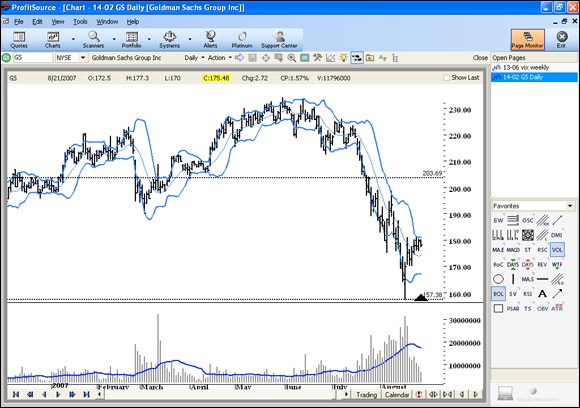
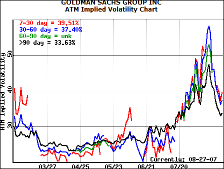
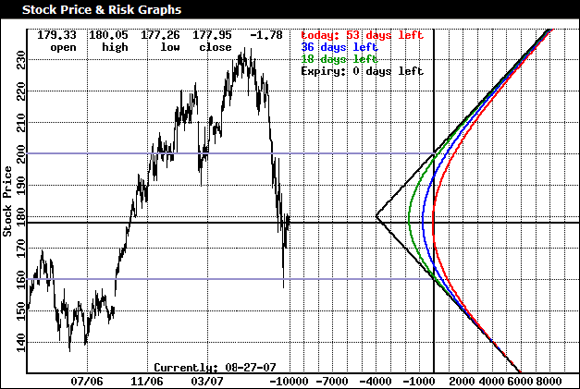
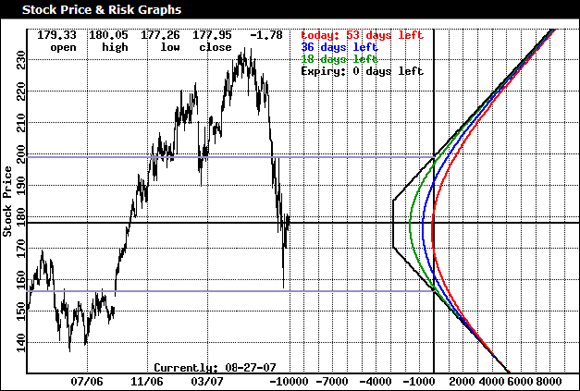
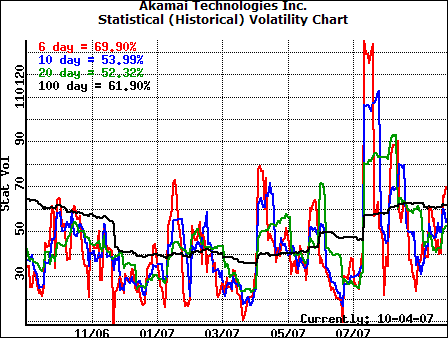
When IV significantly exceeds HV, options are expensive — favor selling. When IV is at or below HV, options are cheap — favor buying. Always view both on charts. Cisco’s IV showed eight predictable spikes over two years from quarterly earnings, creating repeating trade opportunities for those paying attention. A single IV reading in isolation is meaningless; always view in historical context.
Volatility skews reveal specific strategy opportunities. The normal pattern is an IV smile — ATM options have the lowest IV, increasing moderately in both directions. A forward price skew (higher strikes have higher IV) favors ratio spreads. A reverse price skew (lower strikes have higher IV) favors ratio backspreads. A time skew favors calendars and diagonals. The trading edge: sell the high-IV option, buy the low-IV option.
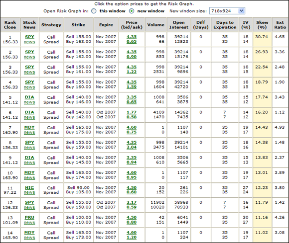
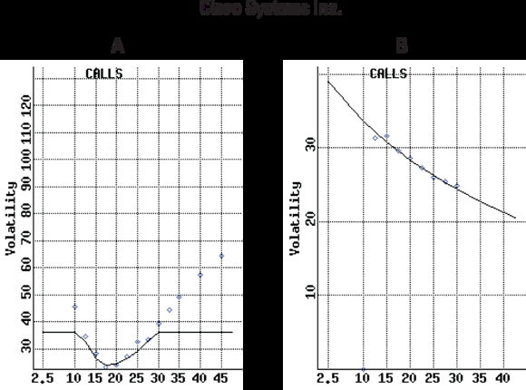
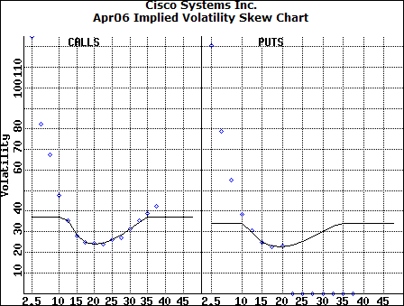
Ratio spreads use uneven numbers of long versus short options — more short than long, generally for credit. The call ratio spread example: stock at $115.70, buy one $110 call at $7.70, sell two $115 calls at $4.20, for a $70 credit. Max reward $570 at $115 expiration. But above $120.70, losses are unlimited. Duarte does not recommend these: the unlimited loss arrow “should really catch your attention.”
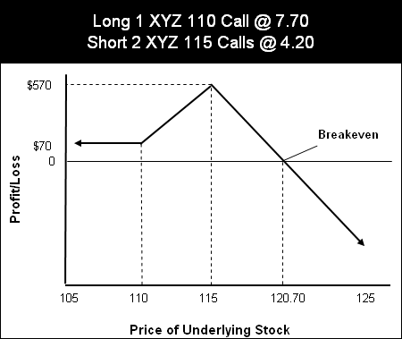
Ratio backspreads flip the script: more long than short, with limited risk and unlimited (calls) or high (puts) reward. The call ratio backspread (sell fewer lower-strike calls, buy more higher-strike calls) is for strongly bullish outlooks with reverse price skew. The ABC example: short two $70 calls at $2.45, long three $75 calls at $0.60, for a $310 credit. The stock barely moved — short calls bought back at $0.65 for $180 profit without being right on direction.
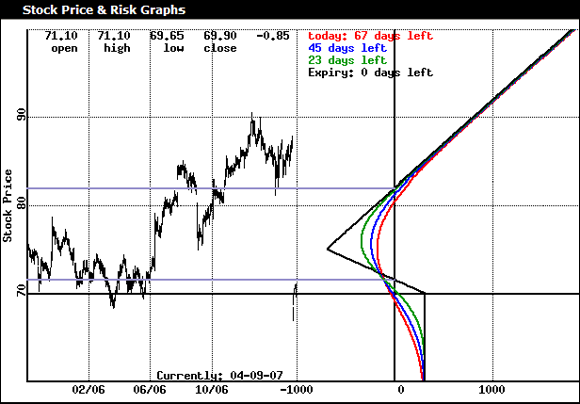
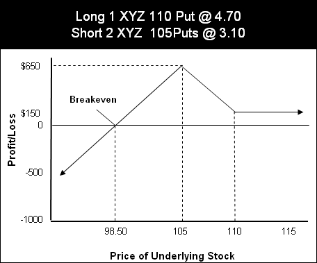
“This trade is a perfect example of how trading options requires a change in perception — not being right and still making money because of a well-planned trade that was all about risk management first and the magnitude of profits second.” — Duarte
The put ratio backspread (sell fewer higher-strike puts, buy more lower-strike puts) works for strongly bearish outlooks with forward price skew. XYZ at $73.85, long two $65 puts at $2.75, short one $75 put at $7.20, for a $170 credit. Max risk $830 at the $65 strike, max reward $5,670 if stock goes to zero. Stock fell to $55.08, netting $290 profit.
Implementation rules for both backspread types: keep ratios at 1:2 or 2:3 maximum. Seek initial credit. Use 90 days to expiration when possible. Take 50% profits on equal numbers of long and short legs at breakeven. Exit with 30 days remaining when time decay hurts long options. Never hold a short ITM or ATM option into expiration weekend. Focus on stocks in the $25 to $75 range for better credit availability.
Price skews provide ratio backspread opportunities; time skews provide calendar spread opportunities. This single sentence is the organizing principle for the entire volatility chapter. When you see a skew, identify the type, then match it to the strategy that capitalizes on the mispricing. The edge is structural, not directional — you are trading the volatility surface, not the stock price.
Seasonal IV patterns like Cisco’s quarterly spikes can be exploited systematically. Enter straddles or backspreads when IV is at the seasonal low, let the earnings-driven spike increase your position value, and exit before or shortly after the event. The key is that the spike must be anticipated in advance and the entry made before IV begins to rise. Buying after IV has already spiked means paying the premium that sellers are harvesting.
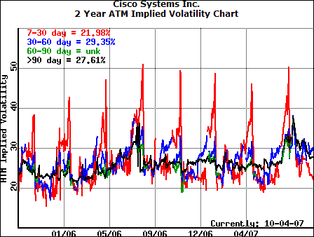
A sideways market is an optionable trend, not the absence of opportunity. Long calls and puts both fail in trendless conditions, but combination positions thrive. The governing rule: sell premium when IV is relatively high, buy when relatively low. The Dell/XYZ covered call case study tracks a complete lifecycle: bought at $24, sold Apr 27.50 call at $0.70, rolled through May and June. Net result: +$0.78/share gain versus −$0.52/share for buy-and-hold.
Butterfly spreads are the precision instrument for range-bound markets. Two vertical spreads combined: the body (two short ATM options) and wings (two long options at outer strikes), entered for a net debit. Maximum profit when the stock closes exactly at the body strike at expiration. The DIA 103-106-109 call butterfly: $140 debit, $160 max reward, breakeven range $104.40 to $107.60.
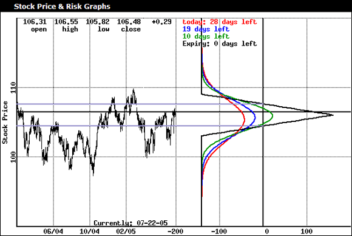
Narrowing the strike distance changes everything. The 1-point spread (105-106-107) costs $30 with a 2.33 reward-to-risk ratio but only a 1.3% breakeven window. The 3-point spread costs $140 with a 1.14 ratio but a 3.0% window. You are trading probability against magnitude — higher probability of profit versus higher potential payoff. The put butterfly (same strikes, reversed construction) is nearly identical but slightly favors bearish outcomes.
The iron butterfly uses two credit spreads (bear call plus bull put) with the same short strike, created for a net credit. The MO 60-70-80 example generated $240 credit with $760 max risk, breakevens at $67.60 and $72.40. The iron structure starts with cash in hand rather than paying a debit upfront, but requires margin for both credit spreads.
The condor splits the butterfly’s center strike into two short strikes, using four different prices. Compared to a butterfly: larger breakeven range (higher probability) but lower reward and larger max loss. The iron condor (bear call spread plus bull put spread with short legs at least one strike apart) is the most popular. Duarte’s comparison: same underlying, 5-point spreads — condor has 7.5% breakeven range and 1:1 ratio, butterfly has 5.6% range but 3:1 ratio.
The covered call rules for sideways markets: do not place a standing stop-loss on the stock (creates naked short call if triggered). If you must exit, buy the call back first. When the stock breaks out of consolidation, roll the call up and out. Rolling “out a month and up a strike” extends the trade and captures additional premium. The Dell case study shows how systematic call-selling turned a losing stock position into a modest winner.
Key butterfly and condor operational rules: never let long options expire worthless while short options carry assignment risk. Avoid low-volume ETFs for multi-leg strategies because slippage compounds across four legs. Paper trade before live deployment. The choice between butterfly and condor — and between different strike widths — depends entirely on conviction about how tightly range-bound the stock will remain.
All ten strategies share one property: limited risk. Duarte builds a hierarchy from simple to complex. The married put (long stock plus long put) converts high-risk stock ownership into defined-risk; best in low IV. The collar adds a short call to reduce protection cost; enter when IV is low, then sell the call after IV increases. The long put replaces short stock entirely; exit 30 to 45 days before expiry. The LEAPS call replaces long stock for a fraction of the capital but misses dividends.
Diagonal spreads generate rolling credits each near-month expiration, reducing cost basis in neutral-to-trending environments. The bear call credit spread replaces the dangerous naked short call with defined risk, best in high IV with less than 45 days. The straddle profits from big moves in either direction, set up before catalysts.
The advanced strategies use ratio structures. The call ratio backspread converts limited reward into unlimited upside by adding extra long calls; best with reverse IV price skew. The put ratio backspread does the same on the downside with forward skew. The long put butterfly replaces the dangerous short straddle with defined risk. All ten share the property that worst-case loss is known before entry.
The strategy-to-conditions matching table is worth memorizing. Bullish low IV: long call, married put, call debit spread. Bullish high IV: covered calls, credit spreads. Bearish low IV: long put, put debit spread. Bearish high IV: call credit spreads. Range-bound high IV: butterfly, condor. Range-bound low IV: calendars, diagonals. The biggest determinant is your financial goal: income, capital gains, or hedging.
What unites all ten is the philosophy that limited risk is not a compromise but the defining requirement. Unlimited-risk strategies exist (naked calls, short straddles) but Duarte excludes them from his list. The margin of safety from knowing your worst case allows proper position sizing, restful sleep, and survival through inevitable losing streaks. The strategies progress from simple to complex, and mastering earlier ones before attempting later ones is not optional.
Each strategy summary includes a table with components, max risk formula, max reward formula, breakeven calculation, and optimal market conditions. These tables serve as quick-reference cards during live trading. Duarte expects readers to have these formulas memorized or immediately accessible before placing any multi-leg position. The risk graph accompanies each strategy, showing the visual profile that makes each one distinct.
The ten strategies form a complete toolkit. Simple protective positions (married put, collar) handle uncertainty. Directional bets (long put, LEAPS call, credit spreads) express a view. Volatility plays (straddle, ratio backspreads) profit from movement without predicting direction. Range-bound strategies (butterfly) extract value from time decay in quiet markets. A trader who masters all ten can construct a position for any market condition, which is the definition of versatility.
The diagonal spread deserves special mention because it is more aggressive than a straight vertical but offers potentially higher returns from selling additional time value through roll credits. Each near-month expiration, the short call is rolled to the next month, generating income that reduces the cost basis of the long option. In a trending market with favorable time skew, a diagonal can produce returns that exceed the underlying stock’s appreciation.
Focus on managing risk, not on making money. Diversify both sectors and strategies — five trending trades in the same sector using the same strategy violates diversification even with proper position sizing. Before every trade: what if I am wrong? Do not avoid losses — avoiding them makes them bigger. One catastrophic loss you refused to take wipes out months of gains. A rule-following losing trade is a success; an undisciplined winning trade is a failure.
“Keep your losses small and let your winners roll.” — Duarte
Trade with discipline every single trade. Early luck is dangerous because it creates false confidence. Each trade requires reasonable position size, defined max risk, defined entry and exit signals, and execution when the plan requires it. Manage emotions rather than trying to eliminate them. Things that elevate trading emotions: discretionary approaches, trading during market hours, holding revenge positions, and personal problems. If you are waking up cranky or unable to sleep, emotions are managing you.
Have a written plan including risk management rules, IV guidelines, and separate sections for investments versus trades. Revisit at three months, six months, then regularly. Expect it to change — that is calibration, not failure. Be patient: sometimes the best trading action is nothing. Do not suffer analysis paralysis — endless optimization is a trap. At some point you must go live with limited-risk strategies and proper position sizes.
Take full responsibility. Vic Sperandeo lost money because he answered his wife’s phone call about a malfunctioning hair dryer during a trade. His conclusion: he needed a “no phone” rule. Never blame brokers, news, or others. If execution issues persist, switch brokers. If time constraints limit you, switch to strategies you can execute properly. Markets will still be there when you return.
Never stop learning. No single strategy works every time. Start by mastering one or two, add more as experience grows. Set annual goals: learn two new strategies, deepen technical analysis. Love the game. Making money as the singular driver eventually produces large losses because the pressure distorts decisions. Passion for the craft — reading about trading, learning strategies, hearing other traders’ stories — is what sustains performance through drawdowns. Trading requires intense, focused work, not long hours but concentrated ones.
Duarte’s biotech loss story: a 30% loss on a failed clinical trial taught him to spot bad management and assess binary risk. He calls it an “immeasurable advantage.” The reframe is essential: losses are operating expenses, not failures. Minimize them through risk management, but accept them as the cost of doing business. The traders who survive are the ones who keep losses small, follow their rules, and stay in the game long enough for their edge to compound.
The plan is the mechanism that manages the emotions that otherwise destroy accounts. Write it by hand for better retention. Include general rules (buy low IV, sell high IV), implementation steps, and a section for what to do when life circumstances change. If you cannot devote the time required, reduce your strategy complexity to match available hours rather than running complex positions without proper monitoring. Half-attention to a multi-leg position is worse than no position at all.
The market is “predictably unpredictable.” Even sound data does not guarantee outcomes. Going live changes everything because paper trading cannot replicate the emotional response to real money at risk. The confidence that comes from following tested rules is what keeps you disciplined when the picture gets hazy. And in trading, the picture is always hazy. Duarte calls options a lifelong pursuit that deserves healthy excitement — not fear, not greed, but engaged curiosity.
Theta is not just a pricing factor but a daily expense, like a short seller’s borrow cost. The cost-per-day comparison (October put at $1.75/day versus January at $1.43/day) shows cheaper does not mean less expensive measured against the protection period. Every trade has a carrying cost, and ignoring it means your position sizing is wrong.
Low IV plus a technical setup is the options equivalent of buying a value stock with a catalyst. High IV with deteriorating breadth is like buying at the top of a hype cycle. The VIX and put-to-call ratios serve the same function as valuation multiples: telling you whether the market prices in too much complacency or too much fear.
Vertical spreads, butterflies, and backspreads all share the property that worst case is known before entry. This is the options equivalent of using stop-losses, except the stop is built into the position structure. You cannot be gapped out — the long option guarantees maximum loss regardless of overnight moves.
Duarte’s ROC-based ranking is pure relative momentum: overweight what is working, underweight what is not, use the 50/200 crossover to switch between aggressive and defensive. The same principle behind pair trading and relative value strategies in institutional finance.
A collar creates a bounded range with defined upside and downside, resembling a fixed-income instrument. For investors nearing a liquidity event or wanting to lock in gains without triggering a taxable sale, the collar is the closest thing to converting equity into a bond-like payoff.
Forward tests always show worse results than backtests because conditions change and inefficiencies close. Abandoning a system after the first disappointing forward test is the same mistake as selling a stock after one bad quarter. The system is reverting toward realistic expectations.
Profits are the byproduct of managing risk well. Define your worst case before entry. A concrete exit for losses is fixed; a potential exit for profits can be adjusted. Protect the downside rigidly, manage the upside flexibly.
This heuristic guides strategy selection more than any other factor. Low IV favors buying strategies. High IV favors selling strategies. Check IV relative to historical levels before every trade.
The last 30 days see dramatic acceleration, which is why Duarte repeats: exit long options 30 days before expiration, sell short options in the 30-to-45-day window.
Every complex strategy — butterfly, condor, ratio spread, backspread — is built from vertical spread components. Master all four flavors before attempting anything more complex.
Every significant decline since 1987 has been preceded by a negative A-D Line divergence. Breadth is the market’s internal health check.
A properly structured option position has objectively less risk than owning stock outright because maximum loss is defined and capital at risk is lower.
A losing trade executed according to rules is a success. An undisciplined winning trade is a failure. Reframe losses as the cost of business.
The January put at $2.15 costs $1.43/day. The October put at $1.05 costs $1.75/day. More expensive upfront delivers cheaper daily insurance.
The call ratio backspread made $180 when the stock barely moved — the opposite of the predicted rally. Well-structured credit entries can profit from wrong directional calls.
“Options trading is a cautious and very precise exercise.” — Joe Duarte
“If you lose a little money 60% of the time but you are able to make good money the rest of the time, you are more likely to come out ahead.” — Joe Duarte
“Keep your losses small and let your winners roll.” — Joe Duarte
“You have to follow your rules or you will lose more money than you can imagine.” — Joe Duarte
“Anytime you utter the word ‘hope’ in reference to a trading position, alarm bells should go off. Hope is eternal — but not in trading.” — Joe Duarte
“Never, ever, ever shift responsibility for trading results onto anyone or anything but yourself.” — Joe Duarte
| Reference | Concept Illustrated |
|---|---|
| Homeowner’s insurance before the fire | Buy protective puts before corrections, not after — premiums spike during crises |
| Buffett’s two rules | Capital preservation as the foundation of all strategy selection |
| Hours of boredom, minutes of panic | The emotional rhythm of trading — patience between setups |
| Market heartbeat (A-D Line) | Internal health versus surface index appearance |
| Brain rewiring | Options require fundamentally different thinking from stock investing |
| Jesse Livermore / 1929 crash | Patience and conviction — one of the few who sold before the crash |
| Martin Zweig / 1987 crash | Put-to-call ratios as early warning, predicted Black Monday on national television |
| Fibonacci in nature | Universal ratios create self-fulfilling support/resistance |
| Sperandeo’s phone call | Personal responsibility — no phone rule, not bad luck |
| Insurance deductible | OTM puts = higher deductible, lower premium |
| Brexit mini-crash (2016) | ATR as leading indicator — bottomed weeks before the crash |
| Operating expenses | Losses are business costs, not failures |
| Biotech 30% loss | Painful loss that became an “immeasurable advantage” |
| Tent / bow-tie shape | Calendar spread risk profile — peak at center, tails on both sides |
| V-shape vs. U-shape | Straddle (V) vs. strangle (U) — flat bottom shows the zone where both legs lose |
Bullish low IV: long calls, married puts, call debit spreads. Bullish high IV: covered calls, credit spreads. Bearish low IV: long puts, put debit spreads. Bearish high IV: call credit spreads. Range-bound high IV: butterflies, condors. Range-bound low IV: calendars, diagonals.
First, cut losses. Second, prevent profits from turning into losses. Third, let profits run. Non-negotiable order.
Identify strategy, define rules, select market and period, set assumptions, test, identify filters, re-test, add risk management, final evaluation. Must cover bull, bear, and sideways periods.
Weekly rank ten SPDRs by 3-month return. Invest in top. Maintain until below rank 3 for two weeks. Switch. Use 50/200-day crossover for regime.
Seek 90 days, stocks $25–$75, ratios 1:2 or 2:3, initial credit preferred. Exit with 30 days remaining. Never hold short ITM into expiration weekend.
| Work | Context |
|---|---|
| Characteristics and Risks of Standardized Options (OCC) | Required reading; brokers must send before granting option approval |
| Reminiscences of a Stock Operator — Edwin Lefevre | Seminal trading psychology book on Jesse Livermore; recommended for patience |
| Fisher Black and Myron Scholes | Black-Scholes option pricing model; Nobel Prize; foundation of all modern option valuation |
| Martin Zweig | Created the put-to-call ratio; predicted the 1987 crash; pioneer of sentiment analysis |
| John Bollinger | Developed Bollinger Bands and PVI; key figure in volatility analysis |
| J. Welles Wilder | Developed ATR; pioneer in technical indicator design |
| Leonardo Fibonacci | Number series producing ratios used throughout technical analysis |
| Trader Vic: Methods of a Wall Street Master — Vic Sperandeo | Phone-call loss story; personal responsibility in trading |
| Market Timing for Dummies — Joe Duarte | Companion book; Bollinger Band trading applications and TA techniques |
| Trading Futures for Dummies — Joe Duarte | TA in active trading across asset classes |
| Jim Fink | Technical editor; JD, MBA, CFA; founder of Options for Income and Velocity Trader |
MCK held at $180 per share. When the stock dropped to $166, Duarte bought three November 160 puts with delta approximately −0.32 each to create delta- neutral protection. Then earnings missed badly and MCK gapped from $159.89 to $129.80 overnight — an 18% gap. The puts surged to between $29.70 and $45.24 (657% gain). After selling stock at $129.80 and puts at $35.53, the position netted $4,229 — a 22.1% gain. Without the hedge: a $5,020 loss, or 27.9%. The 50-percentage-point spread between hedged and unhedged outcomes is the most compelling argument in the book for understanding the Greeks.
GS at $178 with a Fed meeting and earnings within 30 days. Two straddles for $4,020 total risk. GS hit $200.50 on the Fed day, one call sold at $22.80. Full exit on earnings day: $1,410 profit. The strangle on the same stock with OTM strikes cost less ($2,780 risk) but produced more ($1,710) because the OTM structure amplified per-contract gains. Same thesis, different vehicles, different risk/reward profiles — the optimal choice depends on how much premium you spend versus how large a move you need.
Narrowing a butterfly from 3-point (103-106-109) to 1-point (105-106-107) strikes changes the profile dramatically. The narrow costs $30 with 2.33 reward-to-risk but only a 1.3% breakeven range. The wide costs $140 with 1.14 ratio but a 3.0% range. This is the clearest illustration of the probability- versus-magnitude tradeoff. You can have high probability or high payoff, but not both, and the choice depends entirely on conviction about how tightly range-bound the stock will remain.
With 150 shares of SPY at $151.97, Duarte selected four December 150 puts at $4.30 each, spending $1,720 for fall-season protection. The 150 strike chosen for its tightest bid-ask (88,278 open interest). Combined delta of −156 slightly exceeded the +150 stock delta, giving a mild downside bias. The market topped in late October 2007, beginning the worst financial crisis since the Depression. Those December puts, purchased as routine insurance, turned out to be one of the best-timed hedges in the book.
Short two $70 calls at $2.45, long three $75 calls at $0.60, for a $310 credit. The stock barely moved. Both sides decayed, short calls bought back at $0.65 for a $180 profit. The trade made money without being right on direction, entirely because risk management came first and profit magnitude came second. This is the conceptual climax of Duarte’s teaching: you do not need to predict correctly to profit if the position is constructed to make money across multiple scenarios.
Trading Options for Dummies, 3rd Edition · Joe Duarte, MD · Wiley · 494 pages · A comprehensive options curriculum from contract mechanics through advanced ratio backspreads, with risk management as the unifying philosophy.
Joe Duarte, MD is a physician turned trader and market analyst who brings scientific rigor and practical trading experience to his writing. He is a CNBC Market Maven, quoted in Barron’s, the Wall Street Journal, and MarketWatch. He publishes weekly market commentary at JoeDuarteInTheMoneyOptions.com using the same technical and options frameworks presented in this book.
Duarte’s medical background shapes his approach: he treats the market as a system to be diagnosed, with breadth indicators as vital signs, sentiment measures as psychological assessments, and risk management as preventive medicine. His other books include Market Timing for Dummies, Trading Futures for Dummies, and The Everything Investing in Your 20s & 30s Book. The technical editor for this edition, Jim Fink (JD, MBA, CFA), founded Options for Income and Velocity Trader.
The real-money examples throughout — Goldman Sachs straddle, McKesson hedge, XLI covered call, SPY December puts — include specific entry and exit prices, actual P&L, and honest assessment of what worked. The 30% biotech loss he describes as an “immeasurable advantage” separates experienced traders from armchair theorists.
The options education landscape splits between oversimplified introductions that stop at covered calls and dense professional texts assuming stochastic calculus familiarity. Duarte occupies the rare middle ground: starting from zero and building through ratio backspreads, iron condors, and delta- neutral hedging without losing the reader. The progression is deliberate and complete.
What makes this book valuable for self-directed traders is its emphasis on risk management as the organizing principle rather than profit maximization. Every strategy chapter begins with the worst-case scenario and works backward. The risk graphs are primary analytical tools, not decorations. In a field where marketing emphasizes unlimited upside and downplays total loss, this book is refreshingly honest about costs, risks, and emotional challenges.
The real-money case studies elevate the book above pure pedagogy. The McKesson hedge converting a 28% loss into a 22% gain, the Goldman Sachs straddle profiting from a Fed meeting, the SPY puts purchased months before the 2007 top — these are actual trades with verifiable outcomes. For anyone building an options practice from scratch, this book provides the complete toolkit: what to trade, how to analyze it, when to enter and exit, and how to survive the inevitable losses along the way.